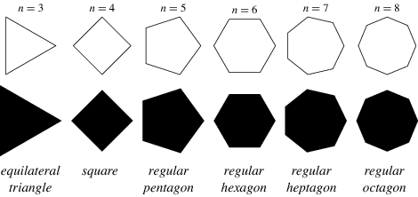

The perimeter of a regular n-pligon is calculated with this formula: $$ perimeter =n*length $$ Where the "n" is the number of sides of any regular n-poligon.

Number of sides:
Length of the sides:
Perimeter:
Back